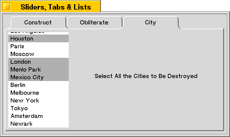
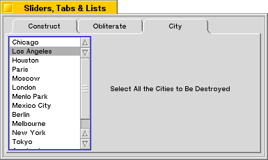

| The Interface Kit Table of Contents | The Interface Kit Index |
Derived from: public BView, public BInvoker
Declared in: be/interface/ListView.h
Library: libbe.so
A BListView displays a list of items the user can select and invoke. Each item is a kind of BListItem object. The BListView manages the layout of the list and the interaction with the user; it leaves the display of each item to the BListItem objects. A BListItem is not a view and draws only when called upon by the BListView.
The figure below depicts a window that contains a sample BListView.

A BListView displays all items unindented at a single level. A derived class, BOutlineListView, can arrange items in an hierarchical outline.
This class is based on the BList class of the Support Kit. It implements counterparts for all BList member functions, so you can treat a BListView object just like a BList. BListView simply makes the list visible.
BListView functions work identically to their BList counterparts, except for two things:
In both classes, the list keeps track of data pointers—void* pointers in the case of BList and pointers to BListItems in the case of BListView. Adding an item to the list adds only the pointer; the pointed-to object isn't copied.
When the contents of the list change, the BListView makes sure the visible list on-screen is updated. However, since it records only pointers to data, it can know that something changed only when a BListItem is added or removed. If an item pointer remains the same but the data the item displays is altered, the BListView won't know about it. In this case, you must force the list to be redrawn (by calling the InvalidateItem() function or BView's Invalidate()).
The user can click an item in the list to select it and double-click an item to both select and invoke it. The user can also select and invoke items from the keyboard. The navigation keys (such as Down Arrow, Home, and Page Up) select items; Enter and the space bar invoke them.
By default, a BListView permits only one item to be selected at a time. However, at construction and with the SetListType() function, you can set it up to allow multiple selections. The user can make contiguous extensions to the current selection by holding down a Shift key, and discontinuous extensions by holding down an Option key.
The BListView highlights items as they're selected, but otherwise it doesn't define what, if anything, should take place when the selection changes. You can determine that yourself either by implementing a SelectionChanged() function in a derived class or by registering a selection message (a BMessage object) with the BListView. The function is called and the message is delivered to a target destination whenever the user modifies the selection.
Similarly, the BListView doesn't define what it means to "invoke" an item. You can register a separate invocation message that's sent whenever the user double-clicks an item or presses Enter or the space bar while items are selected. For example, if the user double-clicks an item in a list of file names, the message might tell the BApplication object to open that file.
A BListView doesn't have default selection and invocation messages. Messages are sent only if registered with the SetSelectionMessage() and SetInvocationMessage() functions. Before sending either type of message, the BListView adds information to it identifying itself and the items that are currently selected. See the Invoke() function for details.
BListView provides an autoscroll feature: There's an invisible area about 25 pixels high both above and below the list view; if the user clicks inside the list view and then drags into this autoscroll area, the contents of the list will scroll in the direction of the mouse.
BListView also provides optional item-dragging that let's the user reorder the items in the list. To turn on this feature, you have to subclass BListView and implement InitiateDrag() to return true.
Note that although a BListView is scrollable, it doesn't provide scroll bars. You can place the BListView inside a BScrollView to get the more traditional appearance for your list:

The code for this might look something like this:
BListView *list = new BListView(r, "City", B_MULTIPLE_SELECTION_LIST);
list->AddItem(new BStringItem("Chicago"));
...
theView->AddChild(new BScrollView("scroll_cities", list,
B_FOLLOW_LEFT | B_FOLLOW_TOP, 0, false, true));
See the BScrollView class for a more in-depth explanation of scrolling views.
See also: the BList class in the Support Kit, the BOutlineListView and BListItem classes
InitiateDrag()
Can be implemented to permit users to drag items—for example, to reorder items in the list.
SelectionChanged()
Can be implemented to take collateral action each time the selection changes.
|
Initializes the new BListView. The frame, name, resizingMode, and flags arguments are identical to those declared for the BView class and are passed unchanged to the BView constructor.
The list type can be either:
| B_SINGLE_SELECTION_LIST | The user can select only one item in the list at a time. This is the default setting. |
| B_MULTIPLE_SELECTION_LIST | The user can select any number of items by holding down an Option key (for discontinuous selections) or a Shift key (for contiguous selections). |
The list begins life empty. Call AddItem() or AddList() to put items in the list. Call Select() to select one of the items so that it's highlighted when the list is initially displayed to the user.
See also: the BView constructor, AddItem()
|
Frees the selection and invocation messages, if any, and any memory allocated to hold the list of items, but not the items themselves.
|
Returns a new BListView object, allocated by new and created with the version of the constructor that takes a BMessage archive. However, if the archive message doesn't contain data for a BListView object, this function returns NULL.
See also: BArchivable::Instantiate(), instantiate_object(), Archive()
|
Adds an item to the BListView at index—or, if no index is supplied, at the end of the list. If necessary, additional memory is allocated to accommodate the new item.
Adding an item never removes an item already in the list. If the item is added at an index that's already occupied, items currently in the list are bumped down one slot to make room.
If index is out of range (greater than the current item count, or less than zero), this function fails and returns false. Otherwise, it returns true.
See also: BList::AddItem()
|
Adds the contents of another list to this BListView. The items from the BList are inserted at index—or, if no index is given, they're appended to the end of the list. If the index is out of range, the function fails and returns false. If successful, it returns true.
The BListView doesn't check to be sure that all the items it adds from the list are pointers to BListItem objects. It assumes that they are; if the assumption is false, subsequent BListView operations will fail.
See also: AddItem(), BList::AddList()
|
Sets up the BListView and makes the BWindow to which it has become attached the target for the messages it sends when items are selected or invoked—provided another target hasn't already been set. In addition, this function calls Update() for each item in the list to give it a chance to adjust its layout. The BListView's vertical scroll bar is also adjusted.
This function is called for you when the BListView becomes part of a window's view hierarchy.
See also: BView::AttachedToWindow(), BInvoker::SetTarget(), BListItem::Update()
|
Returns the number of BListItems currently in the list.
See also: BList::CountItems()
|
Returns the index of a currently selected item in the list, or a negative number if no item is selected. The domain of the index passed as an argument is the current set of selected items; the first selected item is at index 0, the second at index 1, and so on, even if the selection is not contiguous. The domain of the returned index is the set of all items in the list.
To get all currently selected items, increment the passed index until the function returns a negative number:
BListItem *item;
int32 selected;
while ( (selected = myListView->CurrentSelection(i)) >= 0 ) {
item = ItemAt(selected);
. . .
}
See also: Select()
|
These functions deselect the item at index, all the items, or all the items except those from index start through index finish.
See also: Select()
|
Calls the func function once for each item in the BListView. BListItems are visited in order, beginning with the first one in the list (index 0) and ending with the last. If a call to func returns true, the iteration is stopped, even if some items have not yet been visited.
func must be a function that takes one or two arguments. The first argument is a pointer to the BListItem; the second argument, if func requires one, is passed to DoForEach() as arg2.
See also: BList::DoForEach()
|
Calls upon every item in the updateRect area of the view to draw itself.
Draw() is called for you whenever the list view is to be updated or redisplayed; you don't need to call it yourself. You also don't need to reimplement it; to change the way items are drawn, define a new version of DrawItem() in a class derived from BListItem.
See also: BView::Draw(), BListItem::DrawItem()
|
Updates the on-screen display in response to a notification that the BListView's frame rectangle has been resized. In particular, this function looks for a vertical scroll bar that's a sibling of the BListView. It adjusts this scroll bar to reflect the way the list view was resized, under the assumption that it must have the BListView as its target.
FrameResized() is called automatically at the appropriate times; you shouldn't call it yourself.
See also: BView::FrameResized()
|
Returns true if item is in the list, and false if not.
See also: BList::HasItem()
|
Returns the index where a particular item—or the item whose display rectangle includes a particular point—is located in the list. If the item is in the list more than once, the index returned will be the position of its first occurrence. To determine whether an item lies at the specified point, only the y-coordinate value of the point is considered.
If the item isn't in the list or the y-coordinate of the point doesn't intersect with the data rectangle of the BListView, the return value will be a negative number.
See also: BList::IndexOf()
|
Implemented by derived classes to permit users to drag items. This function is called from the BListView's MouseDown() function; it should initiate the drag-and-drop operation and return true, or refuse to do so and return false. By default, it always returns false.
The point that's passed to InitiateDrag() is the same as the point passed to MouseDown(); it's where the cursor was located when the user pressed the mouse button. The index of the item under the cursor (the item that would be dragged) is passed as the second argument, and the wasSelected flag indicates whether or not the item was selected before the mouse button went down.
A BListView allows users to autoscroll the list by holding the mouse button down and dragging outside its frame rectangle. If a derived class implements InitiateDrag() to drag an item each time the user moves the mouse with a button down, it will hide this autoscrolling behavior. Therefore, derived classes typically permit users to drag items only if they're already selected (if wasSelected is true). In other words, it takes two mouse-down events to drag an item—one to select it and one to begin dragging it.
See also: BView::DragMessage()
|
Invalidates the item at index so that an update message will be sent forcing the BListView to redraw it.
See also: BView::Invalidate()
|
Augments the BInvoker version of Invoke() to add three pieces of information to each message the BListView sends:
| Data name | Type code | Description |
|---|---|---|
| "when" | B_INT64_TYPE | When the message is sent, as measured by the number of microseconds since 12:00:00 AM 1970. |
| "source" | B_POINTER_TYPE | A pointer to the BListView object. |
| "index" | B_INT32_TYPE | An array containing the index of every selected item. |
This function is called to send both the selection message and the invocation message. It can also be called from application code. The default target of the message (established by AttachedToWindow()) is the BWindow where the BListView is located.
What it means to "invoke" selected items depends entirely on the invocation BMessage and the receiver's response to it. This function does nothing but send the message.
See also: Select(), SetInvocationMessage(), BInvoker::SetTarget()
|
Returns true if the item at index is currently selected, and false if it's not.
See also: CurrentSelection()
|
The first of these functions returns the BListItem at index, or NULL if the index is out of range. The other two functions return the very first and very last items in the list, or NULL if the list is empty. None of the functions alters the contents of the list—they don't remove the returned item.
See also: Items(), BList::FirstItem(), BList::LastItem(), BList::ItemAt()
|
Returns the frame rectangle of the BListItem at index. The rectangle is stated in the coordinate system of the BListView and defines the area where the item is drawn. Items can differ in height, but all have the same width.
See also: DrawItem()
|
Returns a pointer to the BListView's list of BListItems. You can index directly into the list of items if you're certain that the index is in range:
BListItem *item = Items()[index];
Although the practice is discouraged, you can also step through the list of items by incrementing the list pointer that Items() returns. Be aware that the list isn't null-terminated—you have to detect the end of the list by some other means. The simplest method is to count items:
BListItem **ptr = myListView->Items();
for ( long i = myListView->CountItems(); i > 0; i-- )
{
. . .
*ptr++;
}
You should never use the items pointer to alter the contents of the list.
See also: DoForEach(), SortItems(), BList::Items()
|
Permits the user to operate the list using the following keys:
| Keys | Perform Action |
|---|---|
| Up Arrow and Down Arrow | Select the items that are immediately before and immediately after the currently selected item. |
| Page Up and Page Down | Select the items that are one viewful above and below the currently selected item—or the first and last items if there's no item a viewful away. |
| Home and End | Select the first and last items in the list. |
| Enter and the space bar | Invoke the current selection. |
This function also incorporates the inherited BView version so that the Tab key can navigate to another view.
KeyDown() is called to report B_KEY_DOWN messages when the BListView is the focus view of the active window; you shouldn't call it yourself.
See also: BView::KeyDown(), Select(), Invoke()
|
MakeEmpty() empties the BListView of all its items, without freeing the BListItem objects.
IsEmpty() returns true if the list is empty (if it contains no items), and false otherwise.
See also: RemoveItem(), BList::MakeEmpty()
|
Overrides the BView version of MakeFocus() to draw an indication that the BListView has become the focus for keyboard events when the focused flag is true, and to remove that indication when the flag is false.
See also: BView::MakeFocus()
|
Responds to B_MOUSE_DOWN messages by selecting items, invoking them (if the mouse-down event is the second of a double-click), and autoscrolling the list (when the user drags with a mouse button down). This function also calls InitiateDrag() to give derived classes the opportunity to drag items. You can implement that function; you shouldn't override (or call) this one.
See also: BView::MouseDown(), Select(), Invoke(), InitiateDrag()
|
MoveItem() moves the item located at the index from to the index specified by the to argument.
ReplaceItem() replaces the item located at the specified index with the specified item.
SwapItems() swaps the items specified by index1 and index2 in the list.
These functions return true if the requested operation is completed successfully, or false if the operation failed (for example, if a specified index is out of range).
|
RemoveItem() removes a single item from the BListView. If passed an index, it removes the item at that index and returns it. If there's no item at the index, it returns NULL. If passed an item, this function looks for that particular item in the list, removes it, and returns true. If it can't find the item, it returns false. If the item is in the list more than once, this function removes only its first occurrence.
RemoveItems() removes count number of items from the BListView, beginning with the item at index. If the list doesn't contain count items between index and the end of the list, this function removes as many items as there are.
The list is compacted after an item is removed. Therefore, you shouldn't try to empty a list (or a range within a list) by removing items incrementing indices. You should either start with the highest index and move towards the head of the list, or remove at the same index (the lowest in the range) some number of times. As an example of the latter, the following code removes the first five items in the list:
for ( int32 i = 0; i <= 4; i++ ) myListView->RemoveItem(0);
See also: MakeEmpty(), BList::RemoveItem()
|
Augments the BView version of ScrollTo() to do some class-internal housekeeping when the list is scrolled. For all practical purposes, these functions are identical to their BView counterparts.
See also: BView::ScrollTo()
|
Scrolls the list so that the first item in the current selection is visible.
|
Selects the item located at index—or all the items from the start index through the finish index—provided that none of the indices are out of range. If the extend flag is false, as it is by default, this function removes the highlighting from the previously selected item(s) and highlights the new selection. However, if the extend flag is true, the newly selected items are added to the current selection.
If you want your newly-selected item to be scrolled into view, you must call ScrollToSelection() after invoking Select(). The Select() function itself does not do any scrolling.
Select() can be called to set an initial selection in the list or change the current selection. It permits the program to select a number of items, even for a B_SINGLE_SELECTION_LIST list.
If you want to be informed of successful selections, you either have to implement SelectionChanged() or supply a selection message (through SetSelectionMessage()). The former is invoked and the latter is sent when an item is selected.
See also: SetSelectionMessage(), Invoke(), SelectionChanged() , Deselect()
|
Implemented by derived classes to do whatever they please when the selection changes.
|
These functions set and return information about the BMessage that the BListView sends when currently selected items are invoked.
SetInvocationMessage() assigns message to the BListView, freeing any message previously assigned. The message becomes the responsibility of the BListView object and will be freed only when it's replaced by another message or the BListView is freed; you shouldn't free it yourself. Passing a NULL pointer to this function deletes the current message without replacing it.
When sending the message, the Invoke() function makes a copy of it and adds two pieces of relevant information—"when" the message is sent and the "source" BListView. These names should not be used for any data that you add to the invocation message.
InvocationMessage() returns a pointer to the BMessage and InvocationCommand() returns its what data member. The message belongs to the BListView; it can be altered by adding or removing data, but it shouldn't be deleted. To get rid of the current message, pass a NULL pointer to SetInvocationMessage().
See also: Invoke(), the BMessage class
|
These functions set and return the list type—whether or not it permits multiple selections. The list_view_type must be either B_SINGLE_SELECTION_LIST or B_MULTIPLE_SELECTION_LIST. The type is first set when the BListView is constructed.
See also: the BListView constructor
|
These functions set, and return information about, the message that a BListView sends whenever a new item is selected. They're exact counterparts to the functions described above under SetInvocationMessage(), except that the selection message is sent whenever an item in the list is selected, rather than when invoked. It's more common to take action (to initiate a message) when invoking an item than when selecting one.
See also: Select(), SetInvocationMessage(), Invoke(), the BMessage class
|
Rearranges the items in the list. The items are sorted using the compareFunc comparison function passed as an argument. This function should return a negative number if the first item is ordered before the second, a positive number if the second comes before the first, and 0 if the two items are ordered equivalently.
Although the comparison function is, in the usual manner for such functions, declared to take two void* arguments, each argument should be a pointer to an item in the list—in other words, a pointer to a BListItem pointer:
int compare_func(BListItem **firstArg, BListItem **secondArg);
See also: Items(), BList::SortItems()
|
Notes the fact that the BListView is the target of a BScrollView and arranges for the border of the BScrollView to be highlighted when the BListView is the current focus view of the active window.
See also: BScrollView::SetBorderHighlighted()
|
Makes sure that the BScrollView that targets the BListView is redrawn when the window is activated and deactivated, if the BListView is the current focus view. This gives the BScrollView a chance to highlight or unhighlight its border, as appropriate.
See also: BView::WindowActivated()
The BListView class implements the suite called "suite/vnd.Be-list-view" consisting of the following messages:
| Message | Specifiers | Meaning |
|---|---|---|
| B_COUNT_PROPERTIES | B_DIRECT_SPECIFIER | Returns the number of BListItems currently in the list. |
| B_EXECUTE_PROPERTY | B_INDEX_SPECIFIER,
B_REVERSE_INDEX_SPECIFIER, B_RANGE_SPECIFIER, B_REVERSE_RANGE_SPECIFIER |
Select and invoke the specified items, first removing any existing selection. |
The "Item" property refers to individual BListItems in the list.
| Message | Specifiers | Meaning |
|---|---|---|
| B_COUNT_PROPERTIES | B_DIRECT_SPECIFIER | Returns int32 count of items in the selection. |
| B_EXECUTE_PROPERTY | B_DIRECT_SPECIFIER | Invoke items in selection. |
| B_GET_PROPERTY | B_DIRECT_SPECIFIER | Returns int32 indices of all items in the selection. |
| B_SET_PROPERTY | B_DIRECT_SPECIFIER,
B_INDEX_SPECIFIER, B_REVERSE_INDEX_SPECIFIER, B_RANGE_SPECIFIER, B_REVERSE_RANGE_SPECIFIER |
Extends current selection or deselects specified items. Boolean field "data" chooses selection or deselection. |
| B_SET_PROPERTY | B_DIRECT_SPECIFIER | Select or deselect all items in the selection. Boolean field "data" chooses selection or deselection. |
The "Selection" property refers to the set of selected BListItems. If the BListView is of type B_SINGLE_SELECTION_LIST, then only one item can be selected at any given instant; the list type cannot be overridden through the scripting interface. Attempting to access multiple selected list elements in a B_SINGLE_SELECTION_LIST results in an error.
The Archive() function adds the following fields to its BMessage argument:
| Field | Type code | Meaning |
|---|---|---|
| "_lv_type" | B_INT32_TYPE | The list type. |
| "_l_items" (array) | B_MESSAGE_TYPE | List items in the list (deep copy only) |
| "_msg" | B_MESSAGE_TYPE | Invocation message. |
| "_2nd_msg" | B_MESSAGE_TYPE | Selection message. |
Some of these fields may not be present if the setting they represent isn't used, or is the default value. For example, if there is no selection message, the "_2nd_msg" field won't be found in the archive.
| The Interface Kit Table of Contents | The Interface Kit Index |
Copyright © 2000 Be, Inc. All rights reserved..